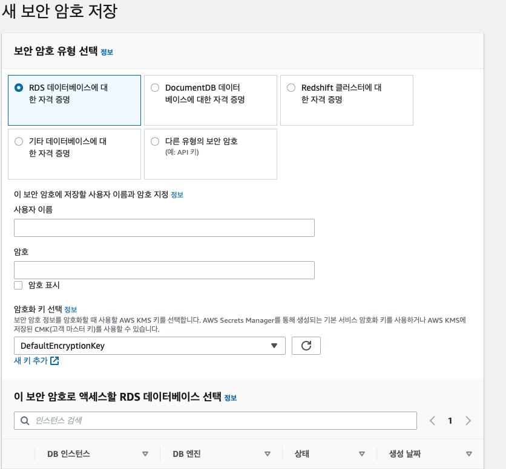
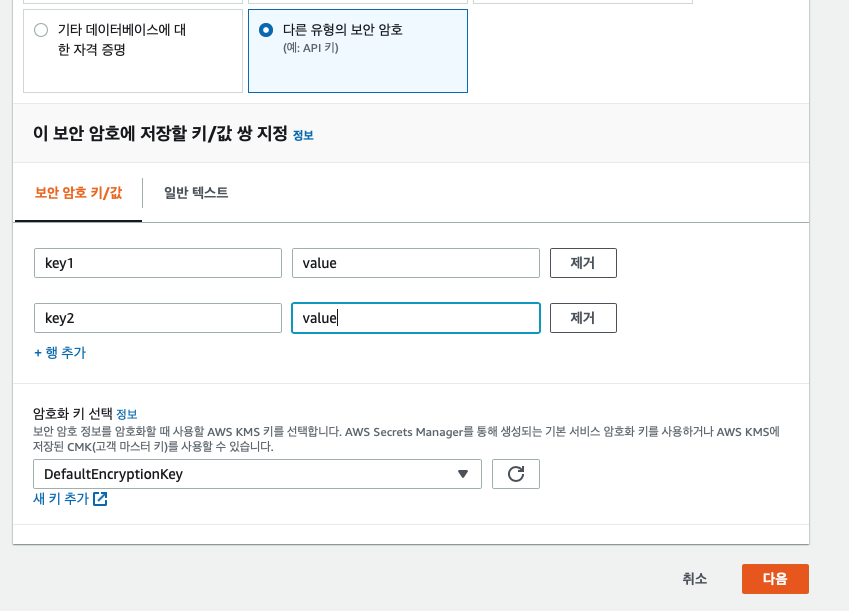

DB의 접속정보나 암호화에 사용될 Salt Key 등은 프로젝트 코드 내부에서 관리하기엔 위험이 따릅니다. 누구나 볼 수 있기 때문이죠.
이건 사내 private 저장소를 사용해도 비슷합니다. 사내의 누구나 이 설정값을 확인할 수 있다면 위험하다고 보안 감사에서 지적 받을 수 있습니다.
그래서 AWS Secrets manager 를 사용하게 되었습니다. Spring cloud config 를 사용할수도 있지만 사용하기 위해 서버등을 신규로 발급받아 설치를 해야하기에 AWS secrets manager를 선택하게 되었습니다.
AWS secrets manager는 KMS 에 저장된 암호화 키로 secrets manager 에 자격 증명을 해서 필요한 보안 정보를 복호화해서 반환해주는 서비스입니다.
Spring Cloud에서 스프링 프로퍼티 소스를 이용해서 AWS Secrets manager 매커니즘을 사용할 수 있기에 org.springframework.cloud:spring-cloud-starter-aws-secrets-manager-config 를 간단하게 라이브러리를 추가해서 활성화 할수 있습니다.
스프링 부트에서 제공하는 환경별로 프로퍼티를 구성하는 것처럼 동일하게 프로필을 명시해주면 모든 서비스 간에 공유가 가능해집니다.
Spring Cloud는 bootstrap.yml(or properties)에서 설정을 로드하게 된다.
사용방법 ¶
aws secrets manager ¶
key 추가 ¶


spring boot ¶
gradle 추가 ¶
implementation 'org.springframework.cloud:spring-cloud-starter-aws-secrets-manager-config:2.2.1.RELEASE'
bootstrap.yml 에 추가 ¶
aws:
secretsmanager:
name: devel-ds-mls-api
prefix:
문제 발생 ¶
-
인프라보안팀에서 secrets mananger 생성시 naming-rule 을 지정해줌
{phase}-{team-name}-{app-name}``ex) devel-ds-mls-api -
문제점
- spring boot 에서는 secret manager 호출시 name 앞에 /( slash)가 기본적으로 붙어서 호출이 된다.
- 위의 aws.secretsmanager.name = mls-api 로 호출하는 경우
- /msl-api 로 호출이 되어 없는 secrets-manager 라고 나오며 오류가 발생
해결방안 ¶
-
인프라팀에 naming-rule 변경 요청
- 시스템 관리시 예외케이스 작성으로 좋은 방법은 아님
- 인프라팀에서 대안으로 devel-ds/mls-api 의 형태로 사용하는건 어떻겠냐고 문의
- aws.secretsmanager.prefix 추가로 해결 가능
-
spring boot secrets-manager
-
(replace fr.anthofo.utils with the path of your own AwsSecretsManagerPropertySourceLocator copy)
-
AwsSecretsManagerPropertySourceLocator 를 재정의
중간쯤 baseContext 부분을 아래와 같이 수정
String baseContext = prefix + "/" + appName;
if(baseContext.startsWith("/")){
baseContext = baseContext.replaceFirst("/", "");
}
참고